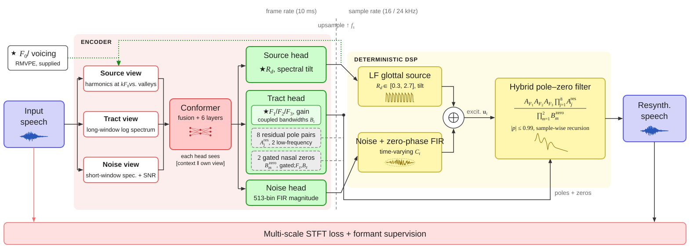
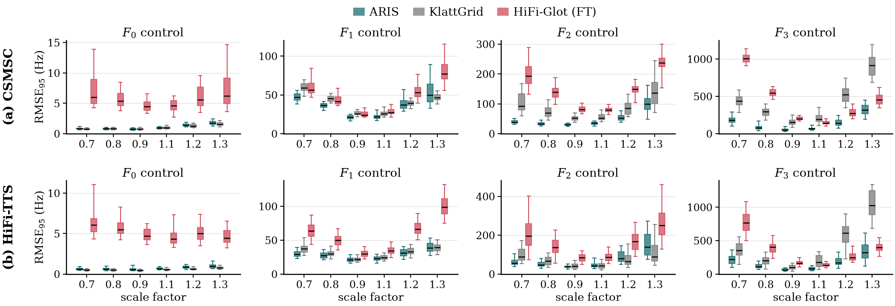

one slider, two acts: F2 sweeps while F1 holds — then F1 sweeps while F2 holds
AbstractPhonetic experiments need to change a single acoustic cue precisely while keeping the speech natural. Signal-processing tools control transparently but lose quality; controllable neural synthesizers sound natural but must learn their controls from large corpora. We present ARIS, a glass-box neural source–filter synthesizer: an encoder estimates frame-level parameters, and a deterministic synthesizer renders them through a glottal source, a noise source and a cascade of explicit formant resonators. Because every control is a synthesizer coefficient, the control space need not be covered by training data, and each model uses at most 1 h of one speaker. On five corpora in three languages, ARIS reproduces sentences and Mandarin syllables with a lower log-spectral distance than WORLD (7.38 vs. 7.62 dB on CSMSC) and higher UTMOS and SQUIM. When single formants are scaled, the median F2/F3 errors on CSMSC are 37.8/110.1 Hz, against 72.3/346.9 Hz for Praat KlattGrid, and editing one formant moves the others by at most 0.04%. HiFi-Glot, pre-trained on 1664 h and fine-tuned on the same 1 h, attains higher predicted MOS but reproduces recordings less faithfully and edits formants with more than twice the error of ARIS.
What is ARIS?
A neural encoder estimates frame-level controls; a deterministic source–filter synthesizer renders them. Every control is a synthesizer coefficient (F0, Rd, one resonator per formant), so an edit is applied exactly, with a model trained on at most 1 h of one speaker.

★ editable · dashed: learned, not exposed
Objective results
Error of the edited cue when F0–F3 are scaled by 0.7–1.3 (60 sentences per corpus).

Copy synthesis
Unedited resynthesis by each system. All files at −26 dBFS.
You don't know the middle classes as well as I do.
HiFi-TTS · 16 kHz · original
Scale
ARIS
KlattGrid
HiFi-Glot (FT)
×0.8
×1 unedited
×1.2
Scale
ARIS
KlattGrid
HiFi-Glot (FT)
×0.8
×1 unedited
×1.2
Scale
ARIS
KlattGrid
HiFi-Glot (FT)
×0.8
×1 unedited
×1.2
Scale
ARIS
KlattGrid
HiFi-Glot (FT)
×0.8
×1 unedited
×1.2
They dislike finality in this country.
HiFi-TTS · 16 kHz · original
Scale
ARIS
KlattGrid
HiFi-Glot (FT)
×0.8
×1 unedited
×1.2
Scale
ARIS
KlattGrid
HiFi-Glot (FT)
×0.8
×1 unedited
×1.2
Scale
ARIS
KlattGrid
HiFi-Glot (FT)
×0.8
×1 unedited
×1.2
Scale
ARIS
KlattGrid
HiFi-Glot (FT)
×0.8
×1 unedited
×1.2
Vowel & formant continua
One natural token, one control moved in equal steps. Values under each step are measured.
Mandarin vowel space ǎ → yǐ (Bark-interpolated F1–F2 trajectory)
ǎ → yǐ啊 (interjection) → 椅 ‘chair’
F024 · manipulated: F1,F2,F3 (Hz) · base token F024_a3
A path across the vowel quadrilateral (Peterson & Barney 1952; Traunmüller 1990 Bark scale): F1 and F2 of a natural Tone-3 ǎ are set to targets equally spaced in Bark between the ǎ and a natural yǐ of the same speaker.
details
F3 is interpolated in Bark as well so that F2 does not collide with F3 near yǐ; F0 and the source are unchanged.
ǎ → yǐ
step 1 · ǎstep 9 · yǐ
ǎ
F1 1122 F2 1593 F3 3163
F1 980 F2 1649 F3 3210
F1 908 F2 1778 F3 3260
F1 815 F2 1881 F3 3331
F1 699 F2 2008 F3 3390
F1 666 F2 2138 F3 3434
F1 540 F2 2284 F3 3493
F1 463 F2 2442 F3 3577
F1 427 F2 2613 F3 3627
yǐ
Mandarin vowel space ǎ → wǔ (Bark-interpolated F1–F2 trajectory)
ǎ → wǔ啊 (interjection) → 五 ‘five’
F024 · manipulated: F1,F2 (Hz) · base token F024_a3
The back edge of the vowel quadrilateral (Peterson & Barney 1952; Traunmüller 1990): F1 and F2 of a natural Tone-3 ǎ are lowered to targets equally spaced in Bark towards a natural wǔ of the same speaker.
details
F3, F0 and the source are held constant, so the end point lacks the other cues of rounding and is an F1–F2-only approximation of wǔ.
MALD · manipulated: F1,F2,F3 (ratio) · base token LEMON
Scaling all formants by a common factor mimics a longer or shorter vocal tract and shifts perceived speaker size (Fitch & Giedd 1999; Smith et al. 2005).
details
F1, F2 and F3 of a natural ‘lemon’ are multiplied by 0.85 … 1.15 while F0 and the source stay fixed; the 8 residual pole pairs are not scaled.
Rising Tone 2 and dipping Tone 3 differ mainly in the timing of the F0 turning point and the depth of the dip, and are the most confusable Mandarin tone pair (Blicher, Diehl & Cohen 1990, Journal of Phonetics 18).
details
The held-out token dá (validation split, never trained on) is resynthesised by ARIS with its own spectral envelope, voicing, duration and amplitude; only the rendered F0 is replaced by contours interpolated in semitones between the natural T2 and T3 (test split) contours of the same speaker (creaky, period-doubled frames of the T3 dip bridged), time-normalised to the base token's voiced span.
The level–rising continuum is the classic test of categorical tone perception (Wang 1976, Annals of the New York Academy of Sciences 280; Xu, Gandour & Francis 2006, JASA 120).
details
The natural yī token is resynthesised with its spectral envelope, duration and amplitude held fixed while its F0 is interpolated in semitones towards the natural yí contour of the same speaker, time-normalised to the base voiced span.
yī → yí
step 1 · yīstep 9 · yí
yī
286→332 min 281
280→339 min 276
280→347 min 279
273→356 min 271
268→362 min 268
264→372 min 261
258→381 min 253
255→387 min 244
251→397 min 234
yí
English statement – question final rise
But he was resigned now.[bʌt hi wəz ɹɪˈzaɪnd ˈnaʊ]statement → echo question
Listeners judge an utterance as a question increasingly often as the terminal F0 rise grows (Hadding-Koch & Studdert-Kennedy 1964, Phonetica 11).
details
On a held-out HiFi-TTS sentence only the F0 of the final voiced stretch (the word ‘now’, at most 400 ms) is interpolated in semitones from the natural statement contour to a convex +9 st rise; all other F0 values, the spectral envelope, timing and voicing are those of the natural recording.
In the Liljencrants–Fant glottal-flow model the single shape parameter R_d runs from pressed/tense (low R_d) to breathy/lax (high R_d) phonation, raising H1–H2 and steepening spectral tilt as it grows (Fant 1995, STL-QPSR 36; Gobl & Ní Chasaide 2003, Speech Communication 40).
details
The model's own frame-wise R_d of a sustained ā is scaled from 0.6 to 1.6 (log-shift on the R_d table); F0, formants, noise branch and duration are untouched.
F024 · manipulated: noise gain (dB) · base token F024_ta1 (train split)
Aspiration noise is a primary cue to breathiness and, in the release of the initial consonant in tā, to aspiration (Klatt & Klatt 1990, JASA 87).
details
ARIS renders noise in a separate, spectrally shaped branch; here its gain is shifted from −12 to +12 dB on tā while the harmonic branch, F0, formants and timing are unchanged. HNR is measured on the vowel, and unvoiced (pre-voicing) energy relative to the vowel.